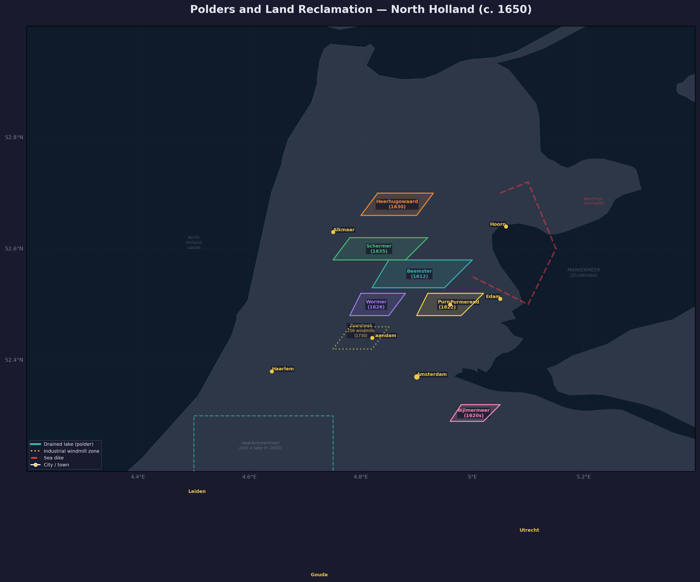

Polders of North Holland: the Beemster (1612), Schermer (1635), Purmer (1622), and Wormer (1626) — drained lakes that added thousands of hectares of farmland. The Zaanstreek (gold dotted) held 256 industrial windmills by 1730. Red dashed = Westfriese Omringdijk.
Polder Model and Water Management
The polder model — the Dutch system of land reclamation, drainage, and water management — was one of the foundational technologies of the Dutch Republic’s Golden Age. The Northern Netherlands sits in the delta formed by the Scheldt, the Maas, and the Rhine, a geography that forced the Dutch to innovate or drown. ^[source: raw/prak-dutch-republic-17th-century.txt]
Geography and the Imperative to Drain
In 1600 a large part of the western Netherlands was literally new land. Place names such as Nieuwvliet, Nieuwveen, and Nieuwwolda bear witness to centuries of land reclamation by damming mud flats and draining marshes behind the dunes. But medieval drainage had limits: draining water-logged peat bogs caused the peat to subside, and groundwater welled up with redoubled force. By the 14th century it became clear that grain cultivation could not pay on these soils, so the Hollanders pivoted — importing basic foodstuffs from the Baltic and turning instead to shipping, fishing, peat production, and textiles. This trade-based economy generated capital that would later be reinvested in large-scale hydraulic engineering. ^[source: raw/prak-dutch-republic-17th-century.txt]
Land Reclamation — Quantitative Data (1540–1815)
The process of land reclamation in the northern Netherlands is often exemplified by the short period of intense lake drainage activity in North Holland from 1610 to 1640, but this formed only the “main event” of a vast pageant of activity extending across three centuries. ^[source: de Vries & van der Woude, Ch. 2.3.1]
Scale of the Achievement
The first comprehensive cadastral survey of 1833 recorded that the province of Holland possessed 375,000 hectare of cultivated land. Lake drainage and new coastal polders in the period 1540–1815 accounted for 94,000 hectare of that area. Comparing the Informacie tax survey of 1514 with the 1833 cadaster suggests that Holland’s farming land grew by some 100,000 hectare — well over one-third — in the course of the sixteenth, seventeenth, and eighteenth centuries. In Zeeland and Groningen the proportional gain was even larger. Across the entire Dutch Republic, some 250,000 hectare was reclaimed between 1500 and 1815, increasing by one-third the cultivated land area of the alluvial zone. ^[source: de Vries & van der Woude, Ch. 2.3.1]
Table 2.2 — Land Reclamation in the Netherlands, 1540–1815 (hectares)
| Period | North Holland lake drainage | All lake drainage | Coastal polders (all provinces) | Total lake & coastal |
|---|---|---|---|---|
| 1540–65 | 1,710 | 1,710 | 30,077 | 31,787 |
| 1565–90 | 389 | 609 | 7,436 | 8,045 |
| 1590–1615 | 8,328 | 9,149 | 27,500 | 36,649 |
| 1615–40 | 15,371 | 20,060 | 25,628 | 45,688 |
| 1640–65 | 1,017 | 1,138 | 28,051 | 29,189 |
| 1665–90 | — | 2,008 | 10,372 | 12,380 |
| 1690–1715 | — | 641 | 11,894 | 12,535 |
| 1715–40 | — | 1,750 | 8,975 | 10,725 |
| 1740–65 | — | 3,724 | 6,598 | 10,322 |
| 1765–90 | — | 7,665 | 10,260 | 17,925 |
| 1790–1815 | — | 5,733 | 10,123 | 15,856 |
| Total | 26,815 | 54,187 | 176,914 | 231,101 |
Nearly half of all land reclaimed in the period 1500–1815 was concentrated in the sixty years after 1590. After the 1650s, activity receded sharply: in the century after 1665, no more land was reclaimed than in the twenty-five years after 1615. ^[source: de Vries & van der Woude, Table 2.2]
The Major Lake Drainages (North Holland, 1610–1640)
Leading Amsterdam merchants and other urban interests invested at least ten million guilders — far more than they had invested to establish the Dutch East India Company (VOC) in 1602 — into the application of new windmill pumping techniques to drain a series of lakes covering 26,000 hectare. The new polders removed the most dangerous threats to the North Holland peninsula and augmented its land area by one-third. They also blocked access to the sea from many villages, reduced inland fishing possibilities, and added a whole new class of large farmers. ^[source: de Vries & van der Woude, Ch. 2.3.1]
The sequence of drained lakes demonstrates the rapid improvement in windmill pumping capacity:
| Polder | Year completed | Depth drained | Key advance |
|---|---|---|---|
| Wieringerwaard | 1597 | 2.0 m | First multi-stage drainage |
| Wogmeer | 1608 | 2.5 m | |
| Beemster | 1612 | 3.5 m | Three-mill molengang |
| Wormer | 1624 | 4.5 m | Four-mill molengang |
These were followed by the Purmer (1622), Wijde Wormer (1626), Heerhugowaard (1631), and Schermer (1635). ^[source: de Vries & van der Woude, Ch. 2.3.1]
Abandoned Projects
The Koegras, an area of 9,000 hectare along the North Holland coast, received detailed plans and government permission in 1657 but was set aside after 1670. Advocates of draining the vast Haarlemmermeer produced numerous pamphlets in the 1640s but fell silent thereafter. Both projects waited until the nineteenth century. ^[source: de Vries & van der Woude, Ch. 2.3.1]
The 17th-Century Drainage Boom
Rising agricultural prices in the first half of the 17th century, driven by demand from booming cities and foreign markets, made polder creation profitable. Dutch merchants, flush with cash from trade, began investing in land reclamation. The critical technological breakthrough came from improvements in windmill technology, which at last made it possible to drain the large inland lakes of Noord-Holland. The results came in rapid succession: the Beemster (completed 1612), Wieringerwaard (1617), Purmer (1622), Wijde Wormer (1626), Heerhugowaard (1631), and Schermer (1635). These projects increased the surface area of Noord-Holland by one-third. ^[source: raw/prak-dutch-republic-17th-century.txt]
Financing and Social Impact
Drainage schemes were financed mainly by merchants from the cities, especially Amsterdam. The same part-ownership model (partenrederij) used to finance ships was applied to windmills and polders, dividing ownership into shares. Wealthy regents built country estates on the new land — Reinier Pauw built Westwijck in the Purmer polder, and Frederick Alewijn a house in the Beemster. The new polders rearranged the entire economic landscape of West Friesland and the North Quarter, altering waterway courses and therefore trade routes. This sparked fierce conflicts between cities: Hoorn and Alkmaar clashed repeatedly over the hydraulic consequences of the Beemster and Heerhugowaard polders, at one point sending armed militiamen to destroy each other’s excavations. A lock dispute in 1634 over the Beemster ring canal brought Hoorn and Alkmaar to the brink of pitched battle. ^[source: raw/prak-dutch-republic-17th-century.txt]
Wind Power and Engineering
The Bovenkruier and Archimedes’ Screw
Existing windmills before the mid-sixteenth century were limited in size because the entire body had to turn into the wind. The development of the bovenkruier design, in which only the cap carrying the sails needed to be rotated, removed this constraint. These more complex and costly mills made possible not just the drainage of existing cultivated land but also the drainage of shallow lakes. ^[source: de Vries & van der Woude, Ch. 2.3.1]
When individual windmills reached a pumping limit of approximately one meter, engineers placed them in series (a molengang). Three or four windmills working in concert could drain progressively deeper lakes. The substitution of an Archimedes’ screw for a paddle wheel, attributed to Symon Hulsebos of Leiden and adopted around 1630, further increased pumping effectiveness. ^[source: de Vries & van der Woude, Ch. 2.3.1]
Industrial Windmills
The wind-powered sawmill, invented by Cornelis Cornelisz. van Uitgeest in 1594, ranks with the development of the herring buss and the fluitschip as the most important technological achievements of the late sixteenth-century Netherlands. The first prototype was built in Alkmaar and introduced to Zaandam the following year. This sparked the development of a vast complex of industrial windmills in the Zaan region that flourished for 150 years. Besides sawing wood, these mills pressed oilseeds, pulped paper, cut tobacco, prepared paint, and processed hemp. The Zaan region contained 53 sawing windmills in 1630 (out of 86 in all of Holland) and 256 in 1730 (out of Holland’s 448). ^[source: de Vries & van der Woude, Ch. 8.3.2]
Professionalization of Dike Maintenance
Around 1500, drainage authorities began replacing the traditional system of personal labor service with centrally coordinated professional dike maintenance financed by taxes. This monetization had far-reaching consequences: it encouraged the commercialization of agriculture and created a floating proletariat of dike and construction laborers. The new assessment system spread gradually — on several important North Holland dikes in 1477 and 1510; on the Spaarndammerdijk from Haarlem to Amsterdam in 1510–15; on the Vijfdelendijk in Friesland in 1574; and throughout the Zeeland islands over the sixteenth century. By the end of this transition, all new polders levied taxes rather than relying on direct services of inhabitants. ^[source: de Vries & van der Woude, Ch. 2.3.1]
Communications Infrastructure — Trekvaarten and Harbors
The Trekvaart Network (1631–1665)
In 1631, thirty cities across the alluvial Netherlands entered into separate joint ventures to invest nearly five million guilders in the construction of 658 km of trekvaart (canals equipped with tow paths for horse-pulled barges). This activity was concentrated in two boom periods ending in 1665 with the outbreak of the Second Anglo-Dutch War. The new canals were dedicated to passenger, parcel, and mail service because the ancient toll rights of Dordrecht, Gouda, and Haarlem forbade cargo vessels from navigating several of them. Two gaps in the network were filled soon after by the construction of paved roads — the only such roads of any length in the Republic until the late eighteenth century. ^[source: de Vries & van der Woude, Ch. 2.3.2]
Harbor Construction
Sixteen ports increased their harbor capacity between 1500 and 1800, with most projects concentrated in the half-century after 1570. The chronology included major expansions at Enkhuizen, Hoorn, Amsterdam, Harlingen, Rotterdam, Middelburg, and Vlissingen. ^[source: de Vries & van der Woude, Table 2.3]
Inland Navigation Projects
Zutphen’s burgers invested 60,000 guilders in the Eerste Berkel Compagnie (1643) to make the Berkel river navigable for flat-bottomed vessels of up to five tons. It went bankrupt in 1670. Zwolle extended the Vecht navigability as far as the German County of Bentheim, with some success — the Hollandse Steenhandel Compagnie shipped some 80,000 cubic feet of Bentheim sandstone per year via the Vecht and Zuider Zee to Holland in the mid-1640s. ^[source: de Vries & van der Woude, Ch. 2.3.2]
Peat Extraction and Energy
Peat occupied a special position at the intersection of three important physical phenomena: the Netherlands’ unique access to low-cost energy, the reclamation of land, and the development of the transportation network. ^[source: de Vries & van der Woude, Ch. 2.3.3]
Scale of Extraction
Since 1600 some 275,000 hectare of land has been stripped of its peat. The peat of the laagveen districts (low bogs of the alluvial zone) was exploited first, since it was found in the very midst of the cities of Holland in a region well supplied with navigable waterways. ^[source: de Vries & van der Woude, Ch. 2.3.3]
Technology and Impact
Around 1530, rising demand from rapidly growing Antwerp caused peat prices to rise half again as fast as the general price level (1480–1530). In response, peat diggers developed the baggerbeugel, a tool permitting them to cut peat below the water level. This technique, called slagturven, permitted more intensive exploitation but destroyed utterly the agricultural value of the affected peat bogs. The exhausted bogs formed lakes that expanded to cover vast areas throughout central Holland and western Utrecht. Drainage authorities responded with export prohibitions, restrictions on slagturven, and taxes on peat removal to raise funds for later reclamation. ^[source: de Vries & van der Woude, Ch. 2.3.3]
Peat Consortia and the Hoogveen
The first peat consortium (veencompagnie) was formed in 1546 to organize large-scale digging in the Gelderse Vallei. Utrecht burgers invested in what became the town of Veenendaal, while an Antwerp consortium led by Gilbert van Schoonbeke began work nearby in 1550. In the north, the exploitation of the hoogveen (high bogs) required lengthy canals and large initial capital. Major consortia included the Stichtse Compagnie (1605), Pekelder Compagnie (1608), Borger Compagnie (1637), and Trips Compagnie (1648) in Groningen, and the Opsterlandse Compagnie (1645) in Friesland. Amsterdam merchant Adriaan Pauw financed the Smildervaart in Drenthe (1612). By 1800, some 23,000 hectare of hoogveen in Groningen alone had been brought under cultivation after peat removal. ^[source: de Vries & van der Woude, Ch. 2.3.3]
Chronology of Expansion and Contraction
After spectacular growth in the first half of the seventeenth century, peat output in the northern provinces fell by half in the second half. Revenue from Holland’s excise tax on peat declined by nearly 20 percent between the 1660s and 1680s, reaching a low point in the 1740s. Peat prices fell faster than the overall price level throughout this period. After 1750 peat prices rose again, stimulating renewed investment: the Stadskanaal in Groningen, the Meppelerdiep in Drenthe, and extensions to the Opsterlandse Compagnonsvaart in Friesland were all undertaken between 1765 and 1767. ^[source: de Vries & van der Woude, Ch. 2.3.3]
Military Application: The Water Line
The Dutch also weaponized their hydraulic expertise. The Water Line, improvised during the 1672 Disaster Year, was a defensive line along Holland’s eastern border that could be flooded at will by opening dykes and sluices. Though the dry summer of 1672 slowed the inundation, the tactic ultimately helped halt the French advance, demonstrating how water management was inseparable from national security. ^[source: raw/prak-dutch-republic-17th-century.txt]
Toll on the Environment
Inundations
The physical environment proved both malleable and vengeful. In North Holland, major inundations occurred with the following frequency: ^[source: de Vries & van der Woude, Table 2.1]
| Century | Inundation years |
|---|---|
| Sixteenth (1500s) | 1502, 1508, 1509, 1512, 1514, 1518, 1530, 1532, 1555, 1570, 1573, 1575, 1580, 1597 |
| Seventeenth (1600s) | 1601, 1610, 1616, 1625, 1665, 1675, 1677 |
| Eighteenth (1700s) | 1714, 1717, 1775, 1776 |
| Nineteenth (1800s) | 1825 |
| Twentieth (1900s) | 1916 |
The incidence of dike failure and inundation decreased markedly from the sixteenth to the early seventeenth century, coinciding with the “regression” phase of sea level during the Little Ice Age. This more benign natural environment facilitated the great drainage projects. ^[source: de Vries & van der Woude, Ch. 2.4]
The Paal Worm Crisis (1730 Onward)
The sudden appearance of the paal worm (Teredo navalis) in 1730 interrupted this more favorable period. Warming coastal waters provoked a population explosion of these mussel-like worms, which bored through the wooden piles forming the essential outer defenses of sea dikes. The attack required that sea dikes throughout the country be rebuilt with stone facing — an exceedingly costly undertaking not completed until the next century. ^[source: de Vries & van der Woude, Ch. 2.4]
Subsidence and Salinization
The drop in agricultural prices around mid-century put an abrupt end to the great drainage schemes. But deeper environmental problems persisted. The reduced tidal action of the Zuider Zee (ebb fell 79 inches at Halfweg in 1570 but only 36 inches in the eighteenth century), the slower discharge of drainage water to the sea, the reduction of surface water area brought about by reclamation, and the resulting penetration of salt water into formerly freshwater areas all conspired to deteriorate water quality. Population growth, urbanization, and polluting industries compounded the problem. ^[source: de Vries & van der Woude, Ch. 2.4]
In the alluvial zone the main alternative to surface water for consumption and industry was rainwater. Water quality deterioration reached dangerous dimensions in the eighteenth century. Leiden’s brewers, who had complained as early as the early seventeenth century that nearby lake drainage slowed water circulation through the city, became implacable opponents of all proposals to drain the Haarlemmermeer — requiring an oath of every new regent abjuring cooperation with any such project. Amsterdam built four windmills in 1681 to supplement tidal action in circulating water through its canals, but brewers soon abandoned local water supplies and imported water via barges from the river Vecht. ^[source: de Vries & van der Woude, Ch. 2.4]
River Silting and Harbor Deterioration
Between 1700 and 1750 the bed of the Neder Rijn rose by one meter. Silt buildup throughout the Rhine-Maas system wrought havoc with adjacent polder drainage, requiring additional windmills, rebuilt locks, and mile after mile of raised river dikes. The Pannerdens Canal (completed 1707), a new IJssel-Neder Rijn connection (1773–76), and the Bijlands Canal (1776) were all attempts to redistribute Rhine water. ^[source: de Vries & van der Woude, Ch. 2.4]
Siltation also struck harbors. Amsterdam spent 107,000 guilders annually by 1778 on five large dredging vessels, each accommodating many horses to power dredging buckets, filling 150 scows with mud. The city built the first “ship’s camel” (a floating drydock) in 1691 to raise large ships over sand bars. Rotterdam’s harbor dredging costs rose from 4,000–6,000 guilders annually in the 1680s to over 40,000 after 1760. The accretion of the sand bank island of Rozenburg rendered the Brielse Gat steadily less navigable. ^[source: de Vries & van der Woude, Ch. 2.4]
Environmental Impact on Mortality
The first detailed mortality statistics from the mid-nineteenth century reveal the alluvial zone to have the highest death rates in the Netherlands. It appears likely that death rates had been lower in the seventeenth century. Environmental deterioration appears to have driven mortality to unprecedented levels in the course of the eighteenth century, with waterborne diseases — malaria, typhus, and cholera among others — becoming particularly virulent where population density was also high. ^[source: de Vries & van der Woude, Ch. 2.4]
Economic Costs of Drainage and Agricultural Responses
The Drainage Tax Burden
The professionalization of dike maintenance added a tax-like burden on land that did not decline with falling agricultural prices after 1650. In all coastal locations, these levies rose sharply after 1730 in order to combat the paal worm threat. Provincial land taxes (the verponding in Holland) compounded the pressure: the verponding was set at 20 percent of net rental value in 1632, but extraordinary surcharges beginning in 1653 drove the effective rate far higher. By 1694–97, farmers needed the sale of 37 million pounds of cheese per year to pay the land tax, up from 12.5 million pounds in 1632. ^[source: de Vries & van der Woude, Ch. 6.4]
Agricultural Distress and Peat Conversion
In the face of falling prices, rigid production costs, rising taxes, and costly natural disasters (including cattle plagues that destroyed 62,000 of 78,000 head in North Holland in 1744–45), farmers in the maritime zone turned to drastic measures. When pressed to the wall, they brought in the peat diggers, converting agricultural land to peat-digging operations. This conversion worsened the long-term environmental damage: the exhausted bogs formed lakes that expanded to cover vast areas, turning the region between Amsterdam, Rotterdam, and Utrecht into a landscape like Swiss cheese, with water-filled, exhausted peat bogs separated only by narrow, vulnerable strips of land. Peat digging became both a pillar of the economy and a threat to the environment and the tax base. ^[source: de Vries & van der Woude, Ch. 2.3.3, Ch. 6.4]
End of the Boom
The drop in agricultural prices around mid-century put an abrupt end to the great drainage schemes. But the polder model — the technical skill, the financial instruments, and the institutional framework of local water boards (waterschappen) — had been proven at scale and would later be exported to England and beyond. The hydraulic expertise accumulated in this period became a lasting competitive advantage for the Dutch Republic. ^[source: raw/prak-dutch-republic-17th-century.txt]
The cessation of investment after the 1660s produced, over time, a relative deterioration of Dutch infrastructure. Plans to drain the Haarlemmermeer and reclaim the Koegras were abandoned. Extensions of cities such as Haarlem, Groningen, and Amsterdam, finished in the 1670s, languished only partially occupied until the nineteenth century. The Netherlands entered a new economic environment inhospitable to the capital-intensive landscape transformations that had characterized the preceding century. Superimposed on this economic shift was an absolute environmental deterioration — river silting, harbor siltation, water quality decline, and salt penetration — that constituted a formidable challenge even costly expenditures could not overcome. ^[source: de Vries & van der Woude, Ch. 2.4]